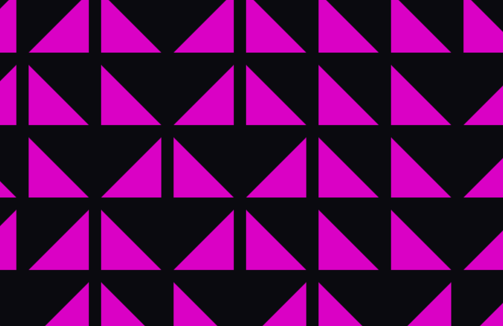
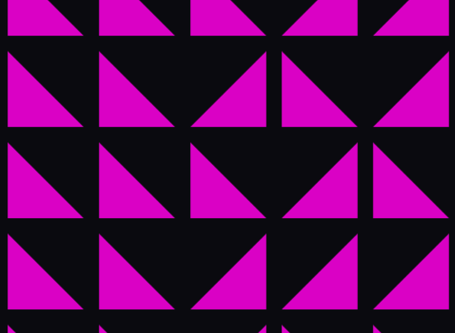
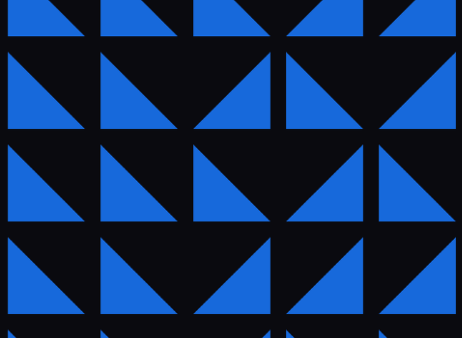
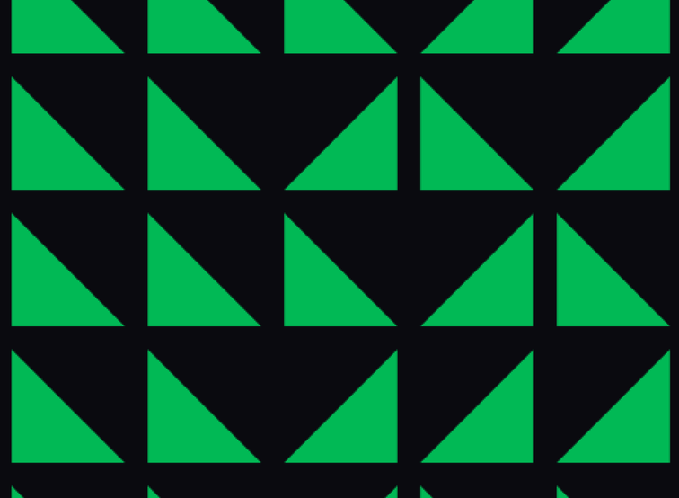

eBook · Watchtower
The next era of AI-powered research.
Surveys are too slow and too biased for the pace B2B decisions move at. Listening to unprompted conversation across a live audience of over 10 million real users is the new primitive of B2B market research.

- Traditional research is out of pace. Recall bias, aspirational responses, small samples, and slow cycles all pull the data further from market truth.
- The shift is from asking to listening. AI can now observe how buyers actually communicate across the digital channels they use every day, without survey bias and without panel limits.
- Watchtower turns a constantly refreshed panel of over 10 million real users into a live read on category signal. Where traditional research gives you answers in weeks, Watchtower delivers clarity in minutes.
Decisions in B2B tech marketing have to be made fast, and most of the tools built to inform them are lagging behind. Traditional surveys, static panels, small sample sizes, and slow research cycles produce data that is skewed, delayed, or outright inaccurate before it lands in a plan.
Ask an IT leader how often they refresh devices, and they will likely say “every three years.” Real-world data shows it is clearly four. That is not deception. It is recall bias, and it shows up everywhere in conventional research.
Time's up for traditional research.
Four failure modes keep pulling conventional research further from market truth.
- People respond aspirationally. They answer based on what they think they should do, or what they believe someone in their role would say. Honest, but a distance from what they actually decide.
- Even clean data is a snapshot. A single point in time tells you what happened, when what you actually need is the trajectory of patterns as they move.
- Conflicts of interest bend the read. When data and insight shift based on who is commissioning the research, the output stops being market truth and becomes marketing content.
- Sample sizes cap what you can trust. Panels big enough to model a category are expensive, hard to refresh, and rarely available at the pace decisions require.
Exhibit 01 · Where traditional research keeps failing
Recall bias
Respondents misremember their own behavior. IT leaders report a three-year refresh cycle when the observed data says four.
Aspirational responses
People answer as they think they should. Actual behavior lives elsewhere. Human, honest, and still a data problem.
Point-in-time snapshots
Even clean data only tells you what happened at one moment. Trajectory over time is what actually informs a plan.
Conflicts of interest
When findings shift with the commissioner, the output moves from market truth to marketing content.
Four failure modes that keep conventional research from moving at the pace B2B decisions require.
From asking to listening.
Ethnography has long been the gold standard in qualitative research. Researchers would embed themselves in real environments, observing what people actually do. It was powerful, but slow, and it did not scale.
AI has changed that. We can now observe how people communicate across the digital channels they use every day. No prompts. No panels. Just the raw voice of the market.
Instead of asking people what they think, we analyze what they are already saying. Live, always-on digital behavior replaces survey bias with statistically sound signals, drawn from a constantly refreshed audience of over 10 million real users.
10M

Meet Watchtower.
Watchtower is Intercept's proprietary AI-powered research platform. It starts with a constantly refreshed panel of over 10 million users who post and engage regularly across social platforms.
Watchtower scans Reddit, X, TikTok, Threads, and more to surface live, unprompted conversations from B2B buyers across roles, industries, and regions. LinkedIn support is arriving later this year.
Where traditional research delivers answers in weeks, Watchtower delivers clarity in minutes.

What Watchtower is designed to do.
Four capabilities form the operating loop, each one built to remove a failure mode of traditional research.
Exhibit 02 · Watchtower, operating loop
Define the audience
Job role, company size, region, industry. The panel is filtered to the buyer you actually care about.
Find conversations
Keyword and semantic search across platforms, surfacing the discussions that map to your category.
Filter the noise
Off-topic, low-signal, and bot content stripped out. What remains is high-quality market conversation.
Track sentiment
Sentiment and topic themes tracked over time, so you see trajectory instead of a single frame.
Refreshes continuously
A live research loop. Every scan tightens the read, and every read informs the next campaign decision.
Real-world use cases.
Watchtower is already inside enterprise programs. Three cases show how the platform lands in practice.
Exhibit 03 · Three real-world use cases
Leading chipmaker
AI PC buyer perception
- Understand how IT buyers perceive AI PCs
- Surface use cases, buying triggers, and blockers
- Feed insight into product marketing narrative
Global software company
Dynamic personas
- Create personas updated quarterly
- Reflect shifting buyer behaviors and preferences
- Replace stale segmentation with live signal
Major enterprise tech brand
KPI tracking at 600,000 sample
- Track category KPIs at 600,000 sample size
- Scale beyond what any panel could deliver
- Continuous read across regions and roles
Three enterprise programs already using Watchtower as the front of the campaign system. Each turns market signal into strategy inputs faster than any survey cycle would allow.

Human and AI, better together.
Let us be clear on what Watchtower does and does not replace. Researchers are not the target. They are the amplifier.
Watchtower blends AI scale with human strategy. Machine learning uncovers the patterns at volume. Our strategy team reviews and refines every output, turning machine-discovered trends into clear, confident guidance for GTM decisions, campaign design, messaging, and creative.
What has not changed: the marketers who understand their audience more deeply build better campaigns and drive better results. Watchtower turns the largest living dataset in the world into a constant stream of actionable insight that a human strategist can act on.
Start the conversation
Give us a hard problem. Let's solve it together.
Bring Watchtower into your next planning cycle and see what a live read on the market changes about the decisions in front of you. Tell us where you are and what you are trying to move.
Open the form →